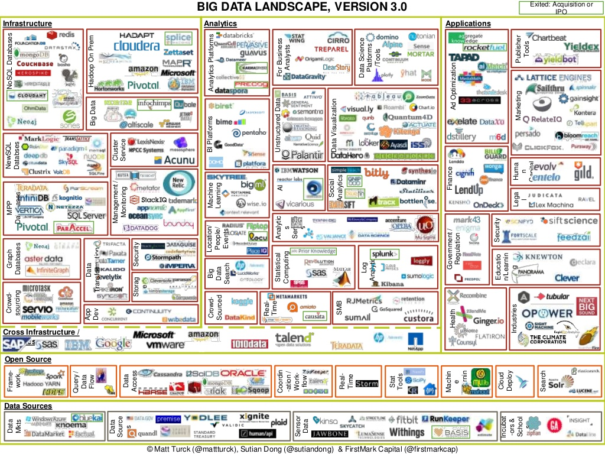

Machine learning for particle physics using R
Andrew John Lowe
Wigner Research Centre for Physics,
Hungarian Academy of Sciences
Introduction: about this talk
- I'm shamelessly recycling slides that I presented at a data science conference in Budapest two weeks ago, so what follows will contain little (if any) physics
- As this is the inaugaral meeting of the LHC machine learning WG, let's start with the absolute basics: tools
- I'll talk about how using R has made it easier for me to ask more complex questions from my data than I would have been able to otherwise
- I'm not advocating that everyone should switch to R
- Hopefully this talk will be complementary to discussions of ROOTR and RMVA
Tools
- Recognise that when you chose a specific analysis tool or framework, you are making a choice that invariably involves some kind of trade-off
- Not always obvious what this compromise is
- Do you have the right tool for the job?
- When your only tool is a hammer, everything looks like a nail
- Generally a good idea to have some familiarity with more than one data analysis tool
- What analysis tools should our students learn?
- Given that PhD \(\neq\) academic career, what knowledge of tools would provide a good RoI and best equip students with the technical skills they need in a job outside HEP?
- What is available to particle physicists?

- For experimental particle physics, ROOT is the ubiquitous data analysis tool, and has been for the last 20 years old
- Command language: CINT ("interpreted C++") or Python
- Small data: work interactively or run macros
- Big data: compile with ROOT libraries, run on Grid
- Data format optimised for large data sets
- Complex algorithms are difficult to do interactively
- End up writing huge C++ programs
- Lots of tweaking, endless edit-compile-run loops
- The best choice for prototyping new methods?
What happened outside HEP in the past 20 years?

On C++ and data analysis
- Is C++ a good choice for data analysis?
- Spend days coding something that runs in minutes or
- Write something in a couple of hours that will run during your lunch break?
- Which will get you your answer faster? What strategy will help you define where you should be focusing your efforts and which paths lead to dead-ends?
- Larry Wall, creator of Perl (speaking about differences in the number of lines of code needed to accomplish the same task using different languages):
You can eat a one-pound stake, or a 100 pounds of shoe leather, and you feel a greater sense of accomplishment after the shoe leather, but maybe there's some downsides...
What I want in my tool box:
Sometimes I want to use:
Or sometimes:
What ROOT provides
There are positives and negatives here...
Why did I choose R?
- Chief among those were the need for fast prototyping and high-level abstractions that let me concentrate on what I wanted to achieve, rather than on the mechanics and the highly-granular details of how I might do it
- Incredibly easy to express what I want to achieve
- Exponentially-growing number of add-on packages
- Latest machine learning algorithms are available
- About 2 million R users worldwide\(^*\); technical questions are answered extremely quickly (if not already)
- Not as fast as C++, but my goal is to quickly test new ideas rather than implement a final model
- Beautiful plots
- Fun to work with ☺
Downsides to using R?
- Can be very slow
- Base R is single-threaded
- Unlikely to do a full HEP analysis with all the data in R!
- But fine for looking at small chunks of data
- Avoid for loops
- Your data has to fit into RAM
- But not always strictly true
- Revolution R Enterprise provides the RevoScaleR package and XDF file format for Big Data
- H2O.ai enables users to import data via a reference to an object in a distributed key-value store
- Other packages: ff, bigmemory...
- But not always strictly true
Getting ROOT data into R
- RootTreeToR enables users to import ROOT data into R
- Written by Adam Lyon (FNAL), presented at useR! 2007
- cdcvs.fnal.gov/redmine/projects/roottreetor
- Requires ROOT to be installed, but no need to run ROOT
# Open and load ROOT tree:
rt <- openRootChain("TreeName", "FileName")
N <- nEntries(rt) # number of rows of data
# Names of branches:
branches <- RootTreeToR::getNames(rt)
# Read in a subset of branches (varsList), M rows:
df <- toR(rt, varsList, nEntries=M)
- Recently became aware of ROOTR, and I look forward to playing with that in the very near future
Getting and cleaning data in R
- data.table is extremely useful here:
- fread found to be at least twice as fast as other methods I tried for importing my data
- Helps me clean and filter my data and is super-fast, especially when using keys:
setkey(DT, numTracks) # Set number of particle tracks to be the key
DT <- DT[!.(1)] # Remove all single-track jets
DT[, (bad.cols) := NULL] # Remove junk columns
- digest is also useful for removing duplicate columns by fast comparison of hashes:
duplicate.columns <- names(DT)[duplicated(lapply(DT, digest))]
DT[, (duplicate.columns) := NULL]
- knitr and R Markdown used everywhere to document process; broke workflow into chunks, one R Markdown file for each, saving intermediate results along the way
More data munging
- To give me some extra space in RAM to work I used SOAR (stored object caches for R):
Sys.setenv(R_LOCAL_CACHE = "soar_cache")
Store(DT) # data.table now stored as RData file on disk and out of RAM
- caret also provides some useful data-munging; I could reduce the size of my data by more than 50% with a conservative cut on correlations between features:
highly.correlated <- findCorrelation(
cor(DT[,-ncol(DT), with = FALSE], method = "pearson"),
cutoff = 0.95, names = TRUE)
- Removing duplicate and highly correlated features was critical for enabling my data to fit in RAM
- To preserve interpretability, I prefer to choose which features to retain instead of letting caret pick features that might have less explanatory value
Feature ranking & selection
- How should we find the features that provide the best discrimination between the processes or physics entities that we wish to classify?
- Given a newly-proposed discriminant variable, how can we rank this new variable against those we already know?
- We can use domain knowledge to drill down to what are believed to be the best discriminants; observables that:
- Can explain most of the variance in the data
- Are minimally correlated with each other
- Provide the best predictive power
- How to optimally search the feature space? (Manual inspection may be impractical for a large feature set)
Problems of too many features
Or: why don't we throw everything into a boosted decision tree or neural net and hope for the best?
- Correlated features can skew prediction
- Irrelevant features (not correlated to class variable) cause unnecessary blowup of the model space
- Irrelevant features can drown the information provided by informative features in noise
- Irrelevant features in a model reduce its explanatory value
- Training may be slower and more computationally expensive
- Increased risk of overfitting
Redundant & irrelevant features
What should we do when it is likely that the data contains many redundant or irrelevant features?
- Redundant features are those which provide no more information than the currently selected features
- Irrelevant features provide no useful information in any context
Feature selection methods
Several methods in R for feature ranking and selection:
- Iteratively remove features shown by a statistical test to be less relevant than random probes: the Boruta algorithm\(^*\)
- Rank by information gain (Kullback–Leibler divergence)\(^\dagger\) or Gini impurity
- Correlation Feature Selection (CFS)\(^\dagger\)
- Recursive Feature Elimination (RFE, Backwards Selection)\(^\ddagger\)
- Simulated annealing\(^\ddagger\)
- Genetic algorithms\(^\ddagger\)
- Many classifiers will output variable importance
- Tried all of these with varying levels of success
- Speed of some methods limits their utility somewhat
Boruta
The basic principle, in a nutshell:
- Boruta algorithm is a wrapper built around the random forest classification algorithm
- Random forests are an ensemble learning method for classification (and regression) that operate by stochastically growing a forest of decision trees; each tree is grown in such a way that at each split only a random subset of all features is considered
- The importance measure of an attribute is obtained as the loss of classification accuracy caused by the random permutation of feature values between objects
- It is computed separately for all trees in the forest which use a given feature for classification
- Then the average and standard deviation of the accuracy loss are computed
- Claims to be robust against "selection bias"\(^*\)
Information gain
- Information gain is based on the concept of entropy from information theory and is commonly used to decide which features to use when growing a decision tree
\[ Entropy = - \sum_{i}{p_i}{\log_{2}}{p_i} \]
- In machine learning, this concept can be used to define a preferred sequence of attributes to investigate to most rapidly classify an item
- Such a sequence is called a decision tree
- At each level, the feature with the highest information gain is chosen
- An alternative measure of "node impurity" commonly used in decision tree learning is the Gini impurity:
\[1 - \sum_{i}{p_i}^2\]
Recursive Feature Elimination
- First, the algorithm fits the model to all predictors
- I used a random forest for the model
- Each predictor is ranked using its importance to the model
- Let \(S\) be a sequence of ordered numbers which are candidate values for the number of predictors to retain (\(S_1\) \(>\) \(S_2\), \(\dots\))
- At each iteration of feature selection, the \(S_i\) top ranked predictors are retained, the model is refit and performance is assessed
- The value of \(S_i\) with the best performance is determined and the top \(S_i\) predictors are used to fit the final model
- To minimise the possibility of selection bias, I performed k-fold cross-validation during training with ten folds
Correlation Feature Selection
The Correlation Feature Selection (CFS) measure evaluates subsets of features on the basis of the following hypothesis: "Good feature subsets contain features highly correlated with the classification, yet uncorrelated to each other"
The following equation gives the merit of a feature subset \(S\) consisting of \(k\) features:
\[ Merit_{S_{k}} = \frac{k\overline{r_{cf}}}{\sqrt{k+k(k-1)\overline{r_{ff}}}} \]
- where \(\overline{r_{cf}}\) is the average value of all feature-classification correlations, and \(\overline{r_{ff}}\) is the average value of all feature-feature correlations. These variables are referred to as correlations, but are not necessarily Pearson's correlation coefficient or Spearman's \(\rho\).
Summary
- It's often said that 80% of data analysis is spent on data munging\(^*\) \(-\) this has certainly been true in my case
- However, I've found a good set of tools for streamlining this process; I've shared what I found most useful here
- To the best of my knowledge, nobody has tried to do a particle physics analysis entirely in R before
- Problems with large data, but workarounds exist
- Insights gained will be valuable for helping me decide where to direct my efforts later when building a final model
- I didn't have to spend time writing a ton of code or worrying about dangling pointers, etc.
- R lets me focus on achieving the goals of my analysis
About these slides
- Like these slides? I made them in R using RStudio!
- Gratuitous eye-candy comes for free
- You can mix HTML, CSS, Javascript, \(\LaTeX\), Unicode, Markdown, movies and R code chunks that evaluate when you knit the slides/document:
- This is HTML and CSS: blink tag!
- This is \(\LaTeX\): \(i \hbar \gamma^\mu \partial_\mu \psi - mc \psi = 0\)
- This is Unicode: 🐱
- Here's some embedded pseudo-analysis code:
print(pi)
## [1] 3.141593
Look down there: \(\downarrow\)
Bonus slides can be here
This is a vertical slide
Give more detailed information in a basement level instead of at the end of a long linear set of slides
Keep going: \(\downarrow\)
Dynamic theme switcher
In case you didn't like the current slide theme...
Sky - Beige - Simple - Serif - Night - Default - Solarized - Moon